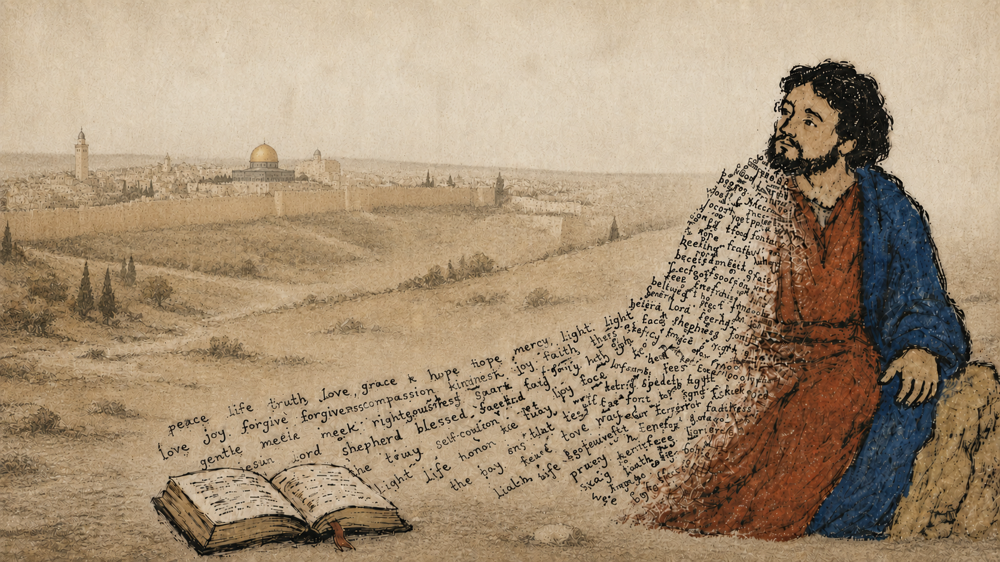
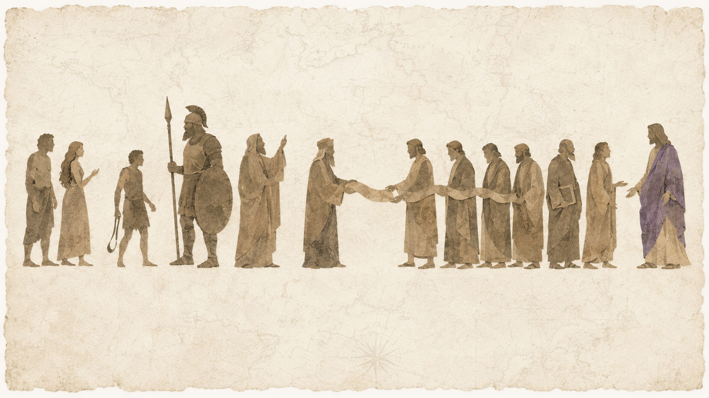

Where
Trace biblical events through real geography and place.

Bible Mapped helps Christians and seekers follow Scripture through real places, real people, real timelines, and real meaning — from Eden to Abraham, from Egypt to Sinai, from Jerusalem to the empty tomb.
Where it happened. Who was there. What was said. Why it mattered.
Place + People + Message + Purpose = Context
Trace biblical events through real geography and place.
Meet the people, cultures, and empires behind the text.
Discover context, purpose, and the bigger biblical story.
See how Scripture connects to meaning, faith, and everyday life.

John 4 Case Study

John 4 happens in Samaria, near Jacob’s well. That location matters because Samaria carried centuries of tension between Jews and Samaritans.
John 4 Case Study

Jesus is a Jewish teacher. The woman is a Samaritan. This is not just a conversation at a well — it is Jesus crossing religious, ethnic, cultural, and personal boundaries.
John 4 Case Study

The location reveals the meaning. Jesus brings living water into a divided place and reveals that true worship is not limited by mountain, temple, ethnicity, or reputation.
Trace Scripture through lands, cities, journeys, kingdoms, exile, and return.
See who they were, where they lived, and why their story matters.
The Bible moves through real people with real names, stories, cultures, failures, questions, and faith. Explore the people behind the text and see how their world helps the story come alive.
Learn Their Story
Short visual studies that help you understand the Bible without getting buried alive in confusion.